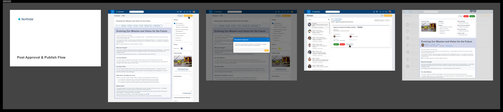
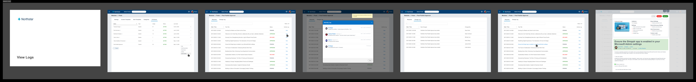

Object Review, Approve & Publish Workflow
I designed one approval workflow that authors could use from the editor they already knew.
- Role
- Lead Product Designer
- Platform
- Web · Posts, then Pages & Wikis
- Year
- 2024
The challenge
Posts, pages, and other content needed review before publishing, but separate approval flows would be difficult to maintain.
Outcome
A shared approval workflow launched for Posts and was extended to Pages and Wikis.

The Approach
Understand the different roles
Admins needed to configure review, authors needed to submit content easily, and approvers needed enough context to make a decision.
Explore the options
I compared four approaches, from a simple approval settings page to a reusable workflow. A settings-only solution was simpler initially but would duplicate configuration as content types grew.
Start with Posts
Product and Engineering aligned on using the existing workflow engine. Posts provided the first use case before the framework was extended to Pages and Wikis.
The Key Decision
A separate approval feature for each content type would repeat the same work.
I chose a reusable workflow framework that routes content to the right approvers.
Authors stay in their existing editors, while the same framework can support more content types.
The Solution
Configure
Admins set the review steps and approvers.
Submit and review
Authors submit from their usual editor. Approvers can preview the content, approve it, decline it, or request changes from a central request.
Keep a record
Approval decisions and feedback remain in the audit trail.
